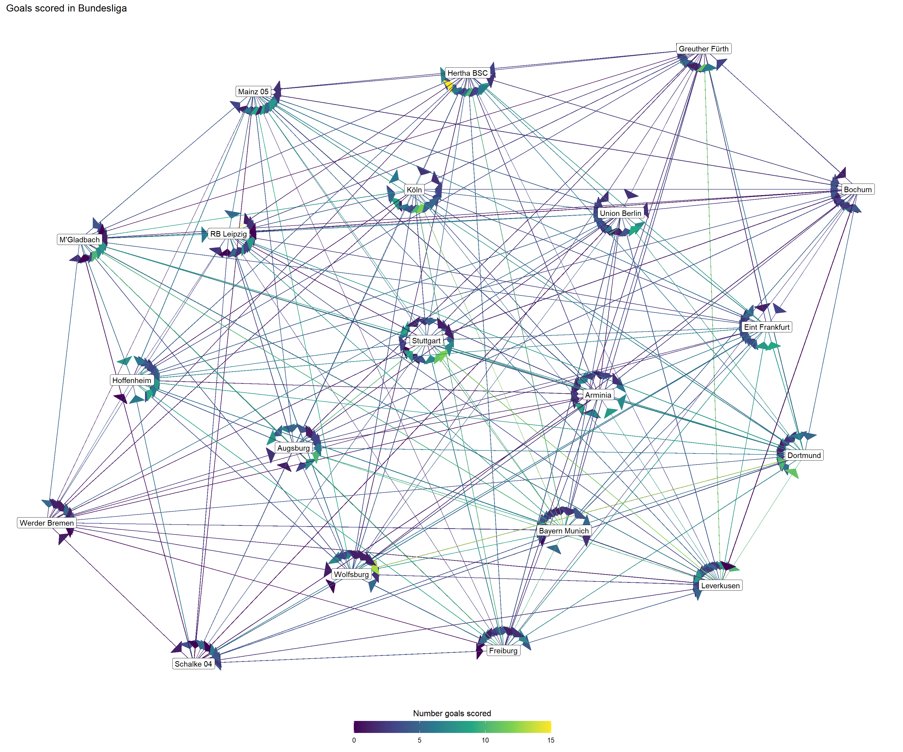
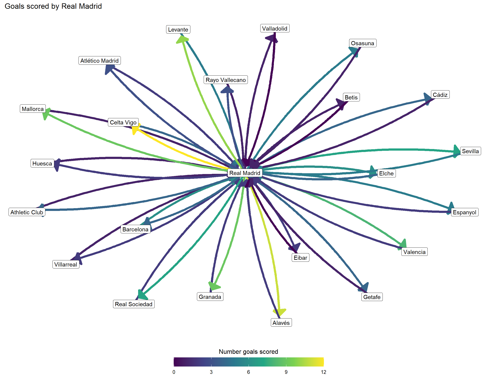

Yay Soccer!
Intro
This is a blog about soccer. Yay!
About Soccer
Insert Background here.
Maps
Number of players by country for three leagues – La Liga, Premier, and Bundesliga.
La Liga
Premier
Bundesliga
Networks
Here are networks displaying the goals scored. The arrows point to the away team.
La Liga

Premier
Bundesliga

Bundesliga - Bayern Munich

Premier - Manchester

La Liga - Real Madrid

First, we have network connections for three big leagues in Europe: Bundesliga (Germany), La Liga (Spain), and the Premier League (England). We made network connections exploring how teams in these leagues have scored on each other. Teams typically play each other twice in the regular season, one game at each team’s field. Therefore, the arrows are colored by the home team’s goals. For example, the arrow going from Manchester City to Arsenal is the amount of goals Manchester City scored when the game was at the Etihad Stadium (Manchester City’s home field). The arrow going from Arsenal to Manchester City is the amount of goals Arsenal scored on Manchester City when the game was at the Emirates Stadium (Arsenal’s home field).
Since these network connections are a bit busy, we decided to create separate connections for the teams that ended in first in each league at the end of the 2021/22 season. These teams are Bayern Munich, Real Madrid, and Manchester City. The arrows represent the same events as mentioned above.
Looking at the network connections for the teams that ended in first, the colors of the arrows show that these teams scored lots of goals on their opponents when they played at home. When they were away, they did not concede many goals.